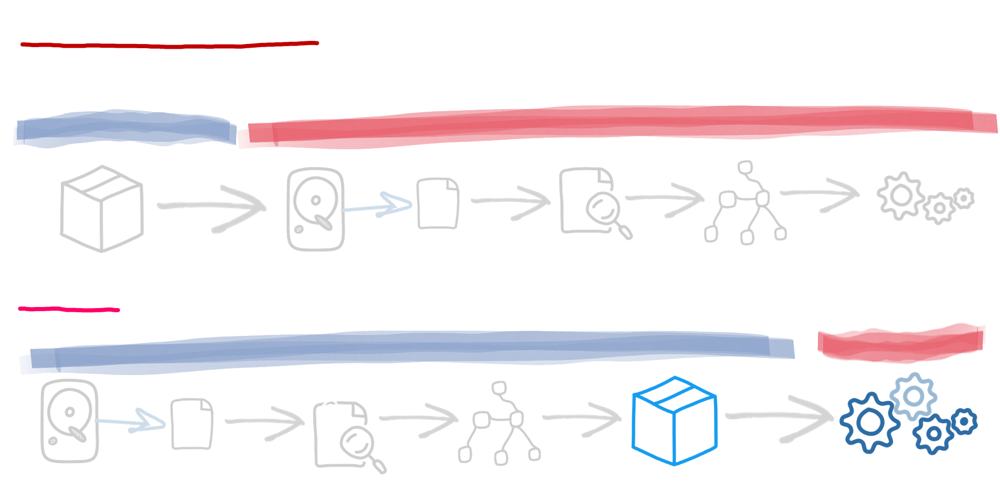

Quarkus パフォーマンス
高速起動、高スループット、低リソース消費を実現する設計
Quarkusは、ビルド時の最適化とリアクティブコアを使用することで効率的に設計されており、高速な起動時間、高いスループット、低い応答レイテンシー、削減されたメモリフットプリント、最小限のリソース消費を実現します。その結果、Quarkusは高速です...非常に高速です。
最小限の作業で高速起動: ビルド時原則
Quarkusは、作業の大部分をビルドフェーズに移行させることで、Javaアプリケーションの構築と実行方法を再定義します。これにより、高コストの作業はビルドプロセス中に一度だけ発生し、起動のたびに繰り返されることはありません。その結果、GraalVMネイティブイメージと従来のJVMデプロイメントの両方で、より高速で、より小さく、よりリソース効率の高いJavaアプリケーションが実現します。
例えば、ビルド時において、Quarkusはアプリケーション設定の一部を読み込み、アノテーションが付加されたクラスのクラスパスをスキャンし、アプリケーションのモデルを構築します。この早期処理により、Quarkusは不要なコンポーネントを排除し、必要な正確な起動命令を計算するのに十分な情報を得ることができます。


このビルド時最適化は、いくつかの主要な利点をもたらします。
- 起動時間の短縮: Quarkusは、重い処理のほとんどをビルド時に実行するため、起動時間を大幅に短縮し、アプリがより早くピークパフォーマンスに到達できるようにします。
- メモリ消費量の削減: 割り当てとクラスロードを最小限に抑えることで、Quarkusはメモリ使用量を削減します。リフレクションをビルド時のバイトコード生成に置き換えることで、JVMのランタイムワークロードがさらに軽減されます。
- より良いレイテンシーとスループットの向上: Quarkusは、ビルド時に高度に最適化されたコードを生成し、不要なクラスやメソッドを削除します。例えば、間接参照の層を結合することで、JIT最適化を向上させます。これらの改善により、より高速なコードとより良いレイテンシーが実現します。
煩わしさのない高い並行処理: リアクティブコア
Quarkusは、NettyとEclipse Vert.xに基づいた効率的な非同期・ノンブロッキングエンジンを使用するリアクティブ原則に基づいて構築されています。多数のスレッドプールではなく、少数のイベントループを採用することで、リソース使用量を削減し、ハードウェアの動作を最適化して応答時間を改善します。
リアクティブが内部にあるからといって、リアクティブコードを書かなければならないわけではありません。Quarkusは3つの開発モデルを提供しています。
- 命令型モデル: 最適化されたI/Oレイヤーにより実行が高速化された従来の同期アプローチで、並行処理が少ない場合に最適です。高並行処理ではメモリ使用量が増加します。
- リアクティブモデル: 非同期のノンブロッキングコードを使用し、最小限のリソースで高い並行処理を可能にしますが、実装とデバッグがより複雑になります。
- 仮想スレッド (JDK 21+): 命令型モデルとリアクティブモデルの利点を組み合わせ、命令型コードを軽量な仮想スレッドで実行することで、低いメモリオーバーヘッドで高い並行処理を可能にします。ただし、いくつかの制限は残ります。
ビルド時原則とリアクティブコアが結合されるとどうなるでしょうか？
ビルド時最適化とリアクティブコアの組み合わせにより、Quarkusは非常に効率的なフレームワークとなり、いくつかの主要な分野で優れています。
メモリ使用量の削減
ビルド時原則は、不要なコンポーネントを排除し、ビルド時に事前計算を行うことで、ランタイムのメモリ使用量を最小限に抑え、クラスロードとメモリ割り当てを削減します。リアクティブコアは、多数のスレッドプールではなく少数のイベントループを使用することで、メモリ使用量をさらに削減し、アプリケーションがより少ないメモリフットプリントでより高い負荷を処理できるようにし、高いデプロイ密度を可能にします。
高速な起動時間
ビルド時の最適化のおかげで、クラスパススキャン、設定ロード、依存性注入のセットアップといったアプリケーションの重い処理のほとんどは、アプリケーションが起動する前に完了します。これにより、アプリケーションが立ち上がり、サービスを提供する準備が整うまでの時間が大幅に短縮されます。リアクティブコアは、I/O操作が最小限のブロッキングで処理されることを保証することでこれに貢献し、起動レイテンシーをさらに削減します。効率的な起動プロセスは、アプリケーションが新しい負荷条件に迅速に対応できることを意味します。この組み合わせは、LightSwitchOpsパターンを実装し、コストを抑えながら弾力性を実現することをサポートします。
高いスループット
ビルド時の最適化により、クラスパススキャン、設定のロード、依存性注入などのタスクは起動前に完了し、起動時間を大幅に短縮します。この効率的な起動により、負荷の変化に迅速に対応でき、費用対効果の高い弾力性を実現するLightSwitchOpsパターンをサポートします。リアクティブコアは、I/O操作でのブロッキングを最小限に抑え、レイテンシーをさらに低減し、多数の同時タスクを処理できるようにします。
最適化されたリソース消費
ビルド時原則とリアクティブコアは、CPU、メモリ、システムリソースの使用を最適化し、より少ないリソースで高いパフォーマンスを実現します。これにより、クラウド環境での運用コストが削減され、リソース消費の低減を通じて持続可能性のメリットも提供されます。
継続的な測定、継続的な改善
Quarkusは、特にクリティカルな実行（ホット）パスで実行されるコードのパフォーマンスを継続的に改善することに専念しています。継続的な最適化を通じて、Quarkusはすべての命令と割り当てられたバイトが重要であることを保証し、高性能なクラウド対応アプリケーションを開発するための最も効率的なフレームワークの1つにしています。